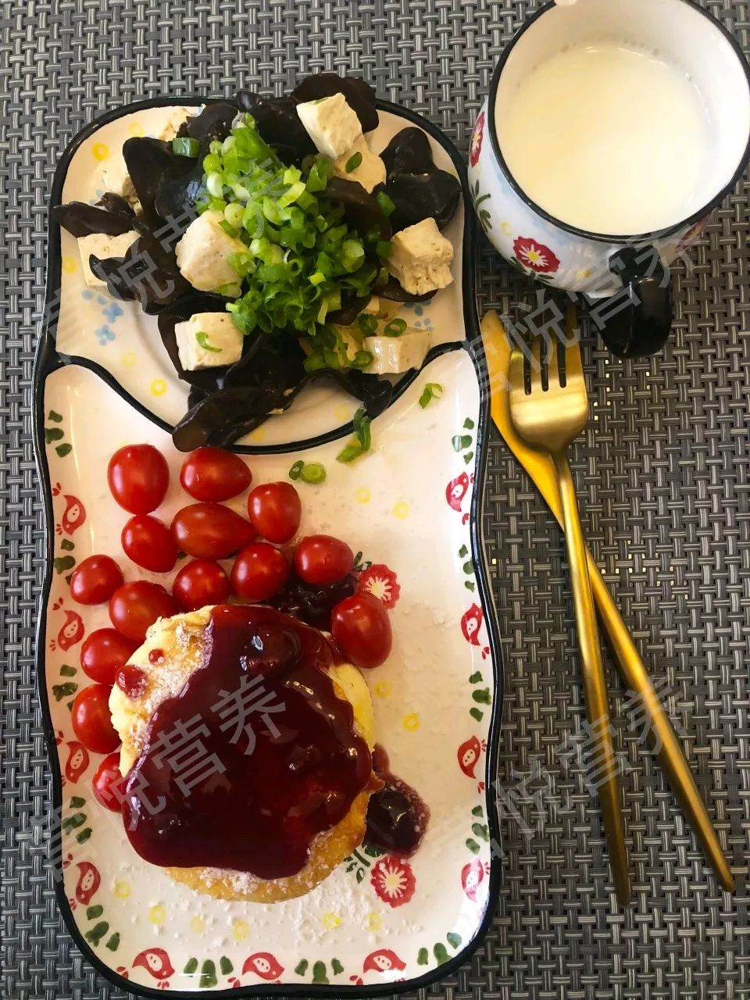
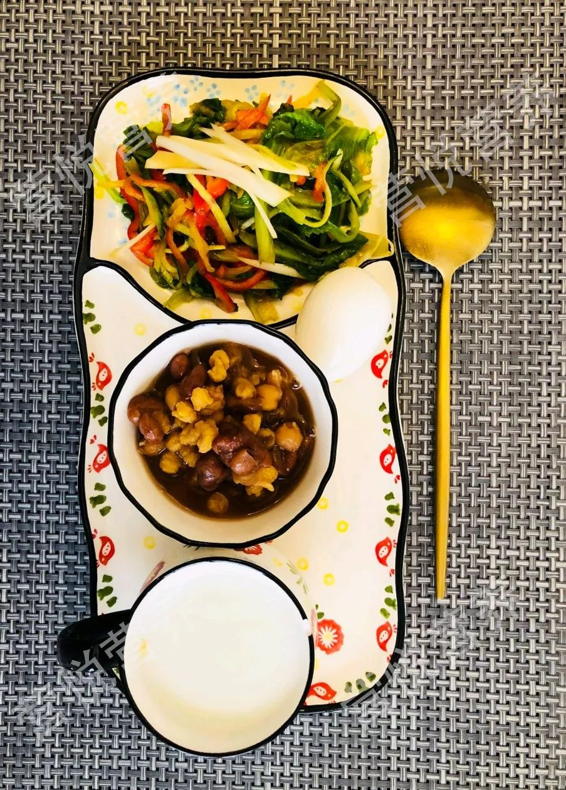
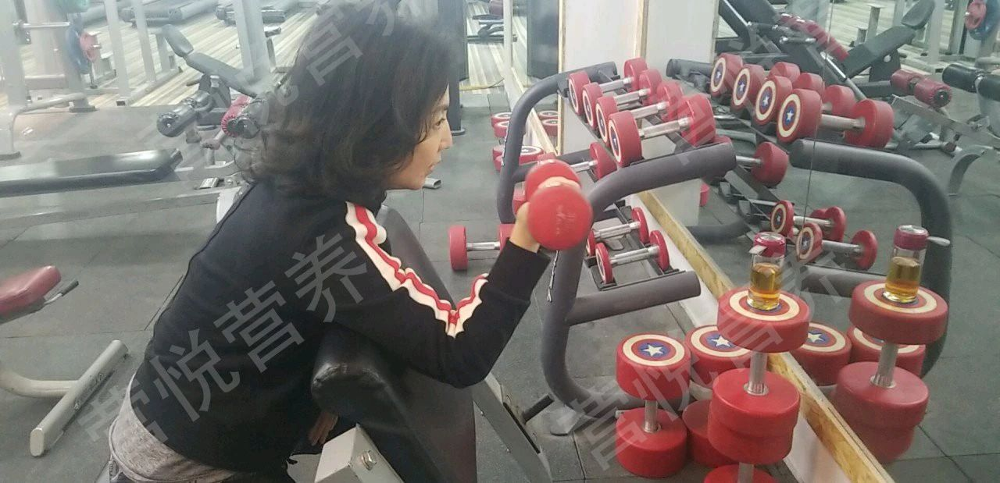
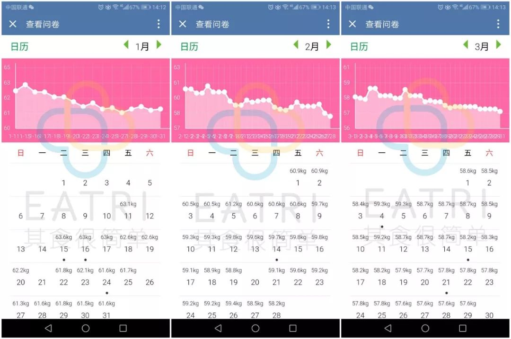
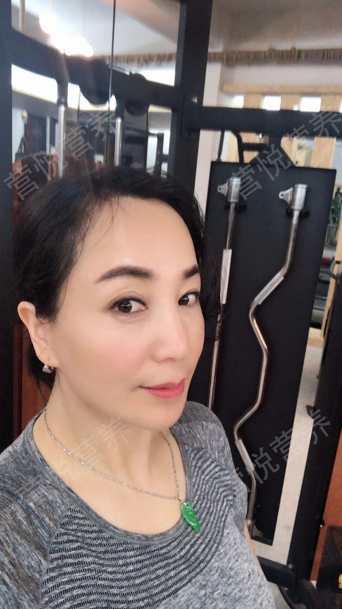

我是一家小企业的boss,平时工作忙压力大，应酬非常多，几乎每天都有饭局，作息毫无规律！后来胰腺出了问题，我从一个苗条的女子，一下子变身为74.9公斤的胖子。
那时身体健康出了状况，医生嘱咐我要少吃，但我一个人时总想吃东西，那种感觉仿佛胃满了，心也就变得满满的。于是大量的零食外卖，总之一切能吃的东西，迅速占领我生活、工作的一切空间。

持续了两个月后，有一天朋友来医院看我，她用疑惑的眼神看着我，已经不知道我是谁！虽然我知道自己胖了，但是没想到已经,胖到连朋友都认不出我的地步看着镜中的自己，我被一种从未有过的紧迫感抓住了。
8年减肥血泪史，跑步伤了半月板
我下定决心，绝不能再让体重随着糟糕的心情沉沦下去。我用了8年时间去减肥，却越减越糟糕，跑步伤害了我的半月板，各种健身都去尝过，有疾而终。
断食吃代餐，月经不调脱发严重
伤了膝盖后，我反省了自己发胖的原因，发现饮食是关键！
于是跟好友互相监督减肥打卡，我舍弃了所有自己喜欢的食品，唯一备用的是几袋黑木耳，还有代餐粉。
我开启了断食疗法 （以下做法大家千万别学）
坚持7天喝代餐粉，其他食物戒掉，一周后瘦了3.5公斤。后来我用木耳与鸡蛋代替食物，坚持了6个月，穿插吃代餐粉，瘦了9公斤。
然而这种节食减肥让我身体付出惨重的代价。我发现自己开始体力不支，脱发越来越严重，脸色蜡黄，月经不调。 我去看医生，医生给我体检时发现我严重营养不良，叮嘱我不能再吃代餐粉了！
朋友介绍营悦减重，我不相信，执意吃瘦身食谱
国庆节我广州的亲戚来我家，我发现她比之前瘦了，而且2个月瘦了20多斤，气色很好，我很羡慕，请教她怎么瘦的。
她告诉我她的朋友推荐她一个营悦减重服务，她请了营养师指导，跟我介绍了这家公司的服务内容及案例，我并没有相信。自己继续在各个网站上搜索所谓的营养瘦身健康饮食餐，经过反复尝试，体重不但没降，反而增长2kg。
减肥再受挫，不想再折磨身体了！
经过各种不科学的减肥挫败，我不想再折磨自己的身体了，把希望寄托于营悦。今年1月份联系营悦营养师，马上签约2个月的服务。我的营养师是Anna老师，她非常认真地指导我，我也很认真执行，跟着营养师的饮食建议来走。
我把每天吃的食物一一记录在案，Anna非常耐心教我怎么吃，吃多少，并跟踪进食后的感觉。这点让我减肥起来并不痛苦，她不仅在乎我的饱腹感，还非常照顾我的心理。
我花了很多心思在配餐上，每一餐都搭配得精致多样，这样做的好处是，既没有时间胡思乱想去约饭，也颇有心计地避开消化系统的“造反”，再战得胜。


坚持，并不容易。但每次翻到与老师聊天日记，都会感慨 “唯有美食和爱，不可辜负”.
除了饮食，我还搭配轻量运动，这样减肥更健康。我没有特别爱好的运动项目，很多运动对我来说，难度太大，我坚持不了。

所以我选择举轻重量的哑铃，每天晚上练习哑铃时间不少于40分钟，风雨无阻。
成功减了12斤，头发多了，月经正常！
在营悦指导下的2个月里，我成功减掉了12斤，而且体重一直处于下降，一点也没反弹。

更令我开心的是！之前盲目吃代餐粉导致脱发，现在我能长出新的头发，而且月经也恢复正常，内分泌也调理正常，下巴再也不长痘痘了！我激动地落泪。
现在我相信自己的选择是正确的，营悦的减脂方式是科学合理的，我的所有维度都变小了。看到我的人第一反应就是惊呼，你怎么这么瘦啊？

因为我减掉的是脂肪，肌肉更加结实了。还变得更加年轻，有活力！
在这漫长过程中，有过痛，有过累，有过反复，有过坚持。我收获的也不仅仅是窈窕的身姿，更是一种让自己身心平衡的生活态度。
想对减肥中的姐妹说
回头看自己当初胖胖的照片，还很后怕。也很心疼过去用不科学减肥方法而让身体承受这么多代价的自己。
不过，还好，一切都过去了。姐妹们，不要害怕走在黑暗里，只怕自己心里没有阳光，好好和自己相处，健康优雅的生活，享受真正的美！
也希望姐妹们不要像我以前那样断食吃代餐，导致脱发、姨妈出走，那10个月我很痛苦也很不健康地减了23斤。而在营悦2个月，我能吃得好好的健康瘦了12斤，所以朋友们减肥一定要科学营养，饮食均衡！我们才会瘦得更健康更美丽！我做到了，你也可以！